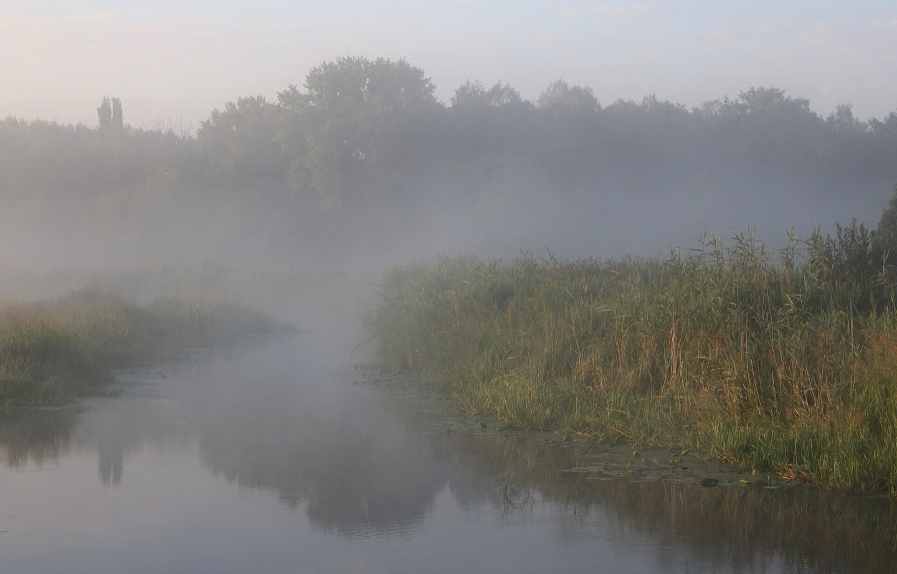
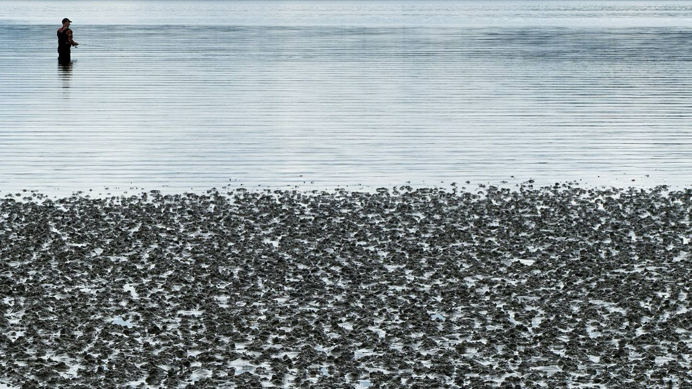
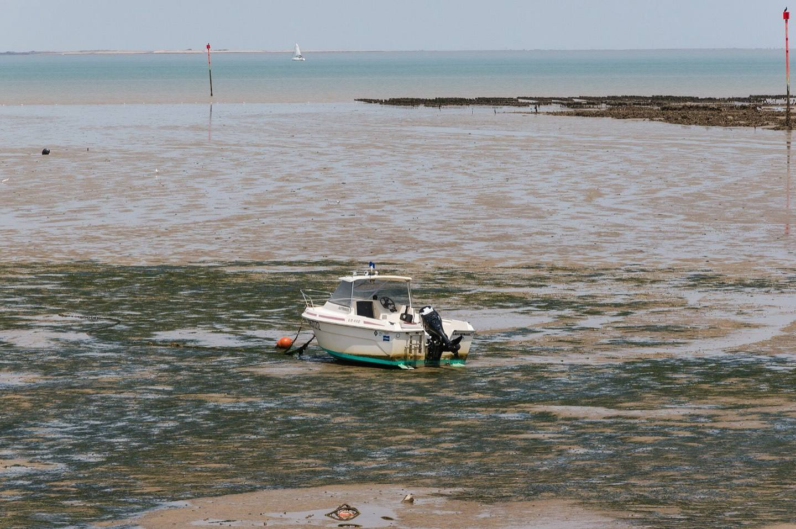
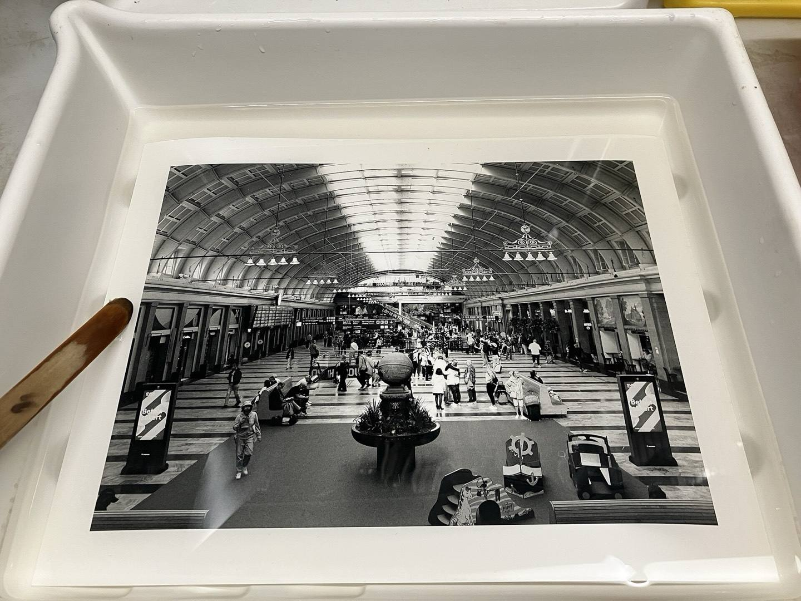

Low Water
Twelve photographs of the Guadalquivir in August,
by Inés Calvo.
Plate 01
The Guadalquivir at its lowest.

Plate 02
Plate 03On film,
from Seville
Inés Calvo works in black and white, on film. Low Water is her new series.
See the edition
Twenty-five of each
Each print is made in the darkroom from the film negative.
- Edition
- 25 prints of each photograph
- Silver gelatin, from the negative
- Film
- Black and white
- Sizes and prices
- Sizes and prices to come

Ask about a print
Choose a plate and leave an address for the reply.
- Edition
- 25 of each photograph
- Where
- Seville